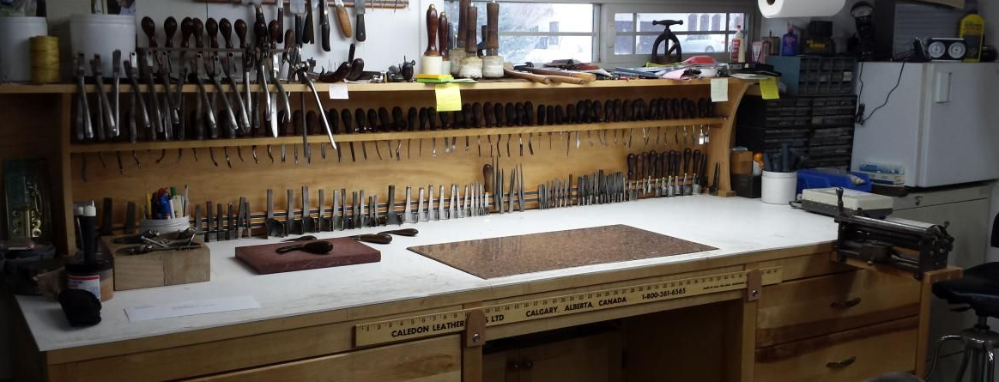

Творческая мастерская
Михаила Кузина
12 апреля 2016 я стал кожевником, то есть впервые выложил свои работы в сеть. Кривоватые, грубоватые, задиристые — все они находили своих владельцев, которым служат по сей день. Иногда мне присылают фото первых кошельков и обложек. Их, конечно, не узнать — они покрыты патиной, исцарапаны, но они все еще ежедневно выполняют свои функции, они все еще любимы.

- С тех пор многое изменилось :
- Творческая мастерская превратился в мастерскую, обрел дом в центре Ульяновска и обзавелся собственным стилем.
- Мы круто прокачали собственное мастерство — те, кто давно за мной следит, наблюдали это в реальном времени.
- Мы перешли на премиальную кожу Horween производства США — вне всякого сомнения лучшую кожу мира. Это из нее шьют ботинки всем американским президентам, а технология ее дубления неизменна вот уже свыше 100 лет. В России с ней не работает практически никто, так как достать ее невероятно сложно и неприлично дорого. Нам это удалось, и мы счастливы радовать тебя премиум- изделиями.
- Для пошива изделий также используем европейскую кожу Crazy Horse и итальянские премиальные Buttero, Pueblo, WAX и Tempesti. В особых случаях заказываем люксовую Shell Cordovan, если того требует разборчивая душа любимого клиента.
- У нас появилась крутая упаковка. Стильные коробки из-под наших изделий способны послужить не меньше самих изделий.
- Мы прокачали не только кожу, но и каждую мелочь. В Творческой мастерской практически все фирменное — начиная от фурнитуры YKK и THK и заканчивая нитками Vinymo, AmyRoke и Fil Au Chinois. Разумеется, весь инструмент тоже.